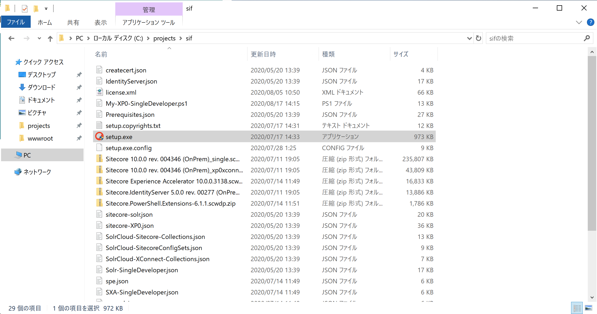
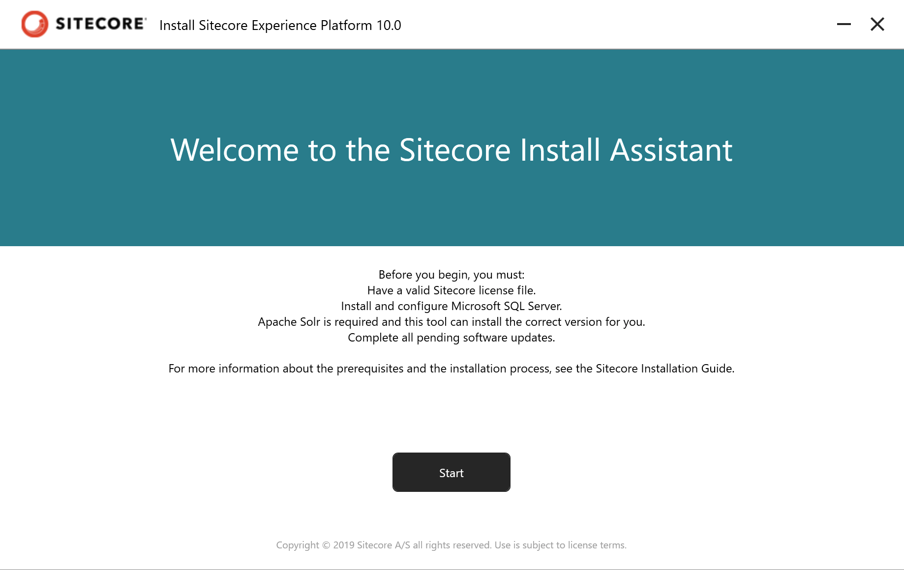
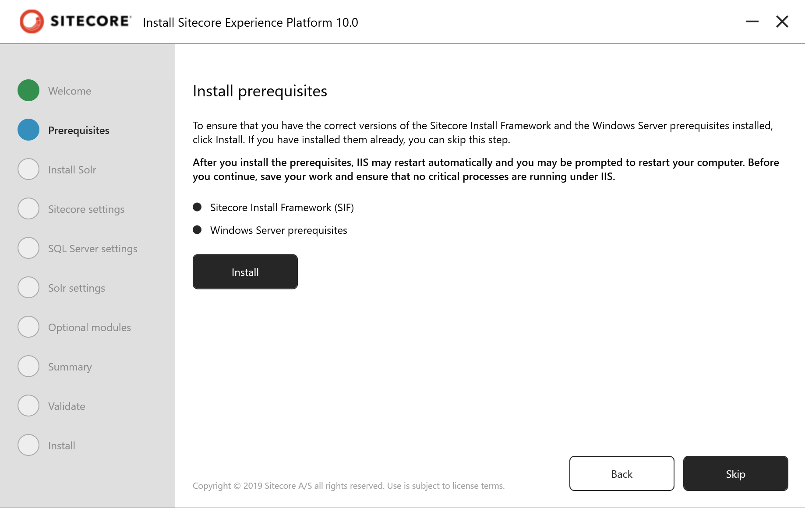
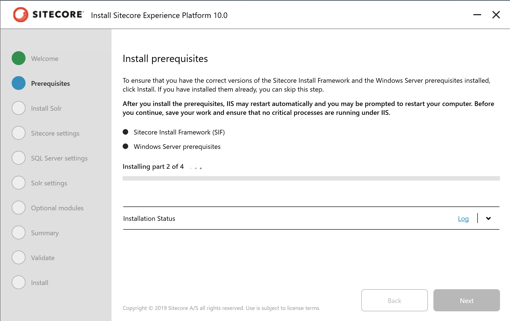
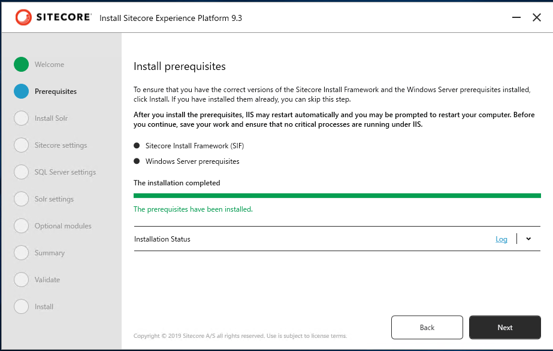
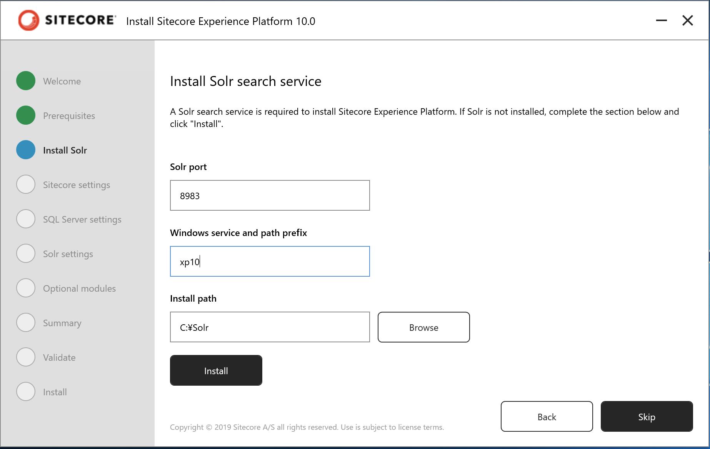
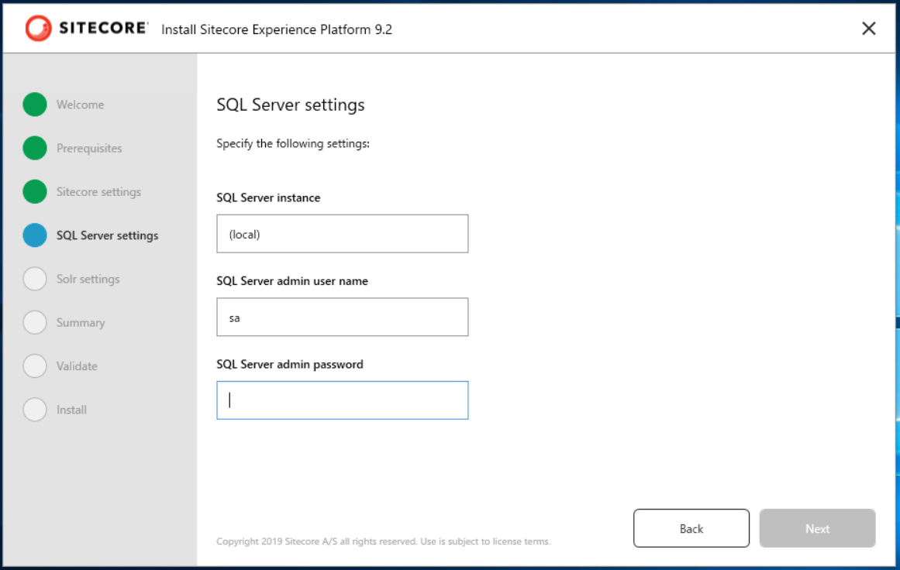

3.3. Sitecore Experience Platform のインストール¶
Sitecore Experience Commerce をインストールする最初のステップは、Sitecore Experience Platform 9.3 を事前にインストールしする必要があります。ここでは、Sitecore Instllation Assistant を利用して、まずは関連モジュールをインストールします。
今回は以下の環境にインストールをします。
Windows Server 2019 Standard
SQL Server 2019
3.3.1. Sitecore のインストールプログラムの入手¶
今回は Sitecore Install Assistant を利用してインストールを進めていきます。このため、以下の Web サイトからインストールファイルをダウンロードしてください。
Download options for On Premises deployment のグループにある Graphical setup package for XP Single をダウンロードしてください。インストールファイルのダウンロードが完了した、ファイルを展開して次のステップに進みます。
3.3.2. モジュールのインストール¶
この手順に関しては、１つの環境で初回のみ実行するだけで完了です。すでに別の Sitecore をインストールしている場合は、スキップしてください。
Sitecore Install Assistant を立ち上げます。これはダウンロードをしたファイルを展開してください。ここでは、 c:\projects\sif に展開します。
{kind=link}
setup.exe をダブルクリックすると、インストーラーが立ち上がり以下のような画面となります。
{kind=link}
Start のボタンをクリックすると、モジュールのインストール画面になります。
{kind=link}
Install のボタンをクリックして、必要なモジュールをインストールしてください。
{kind=link}
インストールが完了すると、Next のボタンが有効になります。
{kind=link}
一旦、ウィザードを閉じます
3.3.3. Solr のインストール¶
Sitecore Install Assistant は 9.3 より Solr のインストールにも対応しています。実際には Sitecore Install Framework のツールが sitecore-solr.json ファイルを利用して、Solr のインストールを行います。ここでは、このファイルを利用してインストールを実行します。
まず、以下の項目が表示されます。
{kind=link}
3.3.4. インストールの開始¶
モジュールのインストールが完了すると、次は Sitecore のインストールとなります。ここではインストールツールに標準で提供されているスクリプトの値を変更します。
インストールをする際の設定を記載します。以下の項目を入力してください。以下の値は例となります。
パラメータ |
入力値 |
説明 |
|---|---|---|
$SitecoreAdminPassword |
b |
管理者パスワード |
$SCInstallRoot |
C:\projects\sif |
インストールのルート |
$SitecoreSiteName |
sxa.storefront.com |
サイト名 |
$SqlAdminPassword |
任意 |
SQL Server パスワード |
{kind=link}
インストールを実行します。
{kind=link}
ログイン画面が表示されれば、インストールが無事完了します。